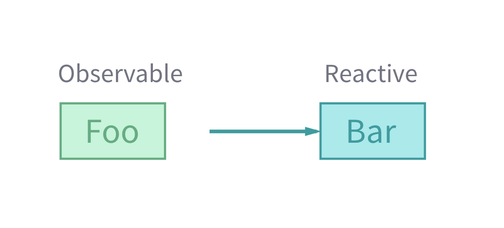

Angular 2
- github.com/timruffles/angular-2-class @timruffles
Code
- github.com/timruffles/angular-2-class
Today
- the core of building an Angular app
Questions
- please ask them! :)
Exercise driven
Can you read the docs?
Yes!
Reading docs = programming! :)
- angular.io
- Angular 2 cheatsheet
- MDN Javascript - Browser DOM - HTML, CSS
- Foundation 6 sites for styling
Can you have the slides?
Yes!
- repo/slides/index.html
Should you help each other?
Yes!
If you finish early, explain to others
- teaching will really test your knowledge
Is asking for help a good idea?
Yes :)
- you can always check API docs at home
- big questions/doubts are good to ask while I'm in the room
Are the exercises puzzles?
No!
If you don't know what to do, ask
- it's hard to follow exercises
Is Angular 2 finished?
No!
- release-candidate
- stuff still changes
- but: big concepts very stable
e.g a few days ago
- :( for me
Any questions before we start?
Big Takeaways
Three
1. Components
2. Dependency Injection
3. Data-flow
Components
Our first component
Goal
<app>
<h1>Hi there</h1>
</app>
Bit by bit
import { Component } from '@angular/core';
@Component({
// any CSS selector
selector: 'app',
// ...
})
@Component({
// ...
template: '<h1>{{ message }}</h1>',
})
export class AppComponent {
constructor() {
this.message = "Hi there";
}
}
export class AppComponent {
All together
import { Component } from '@angular/core';
@Component({
selector: 'app',
template: '<h1>{{ message }}</h1>',
})
export class AppComponent {
constructor() {
this.message = "Hi there";
}
}
Complete app!
import { AppComponent } from "./AppComponent";
import { bootstrap } from "@angular/platform-browser-dynamic";
bootstrap(AppComponent);
<!DOCTYPE html>
<app></app>
<!-- bundled up: app + dependencies -->
<script src="dist/app.js"></script>
Let's have a go
hello-angular
Template superpowers
Data-binding
<!-- interpolated - live -->
<div title="Hello {{ person }}">
<!-- [] = attribute replaced by expression -->
<div [title]="getMessage()">
Event-handling
<!-- DOM events -->
<form (submit)="create($event)">
Styling
- watch out: CSS is escaped
<a [style.size.em]='mySize'>
Link
</a>
Toggling classes
<a [class.active]='isActive(link.id)'>
{{ link.text }}
</a>
Local variables
- access nodes in template
<video #movieplayer >
<button (click)="movieplayer.play()">
</video>
Styling
@Component({
styles: [
`
a {
color: red;
}
`
],
template: `
<a>Hi</a>
`
})
Let's have a go
templates
TypeScript
ES6++

Lots of features
Most important
- Types
- Modules
- Classes
Types
Types
const person : string = "hello";
function greet(name: string): string {
return `hi ${name}`;
}
// this will compile
console.log(greet("hi"));
// Argument of type 'number' is not assignable
// to parameter of type 'string'.
console.log(greet(1));
Woah!
Bit by bit
Variables
// type a var, let, const
const person : string = "hello";
Functions
// type arguments, return values
function greet(name: string): string {
// ...
}
Compiled code is nice
var person = "hello";
function greet(who) {
return "hi " + who;
}
// this will compile
console.log(greet("hi"));
Exercise
EXERCISES.md - typescript-vars
Modules
Uses ES6 modules!
Export
// greetings.en.ts
export const informal = "hi";
Import
// run.js
import { informal } from "./greetings.en";
console.log(informal + " amy") // hi amy
Together
// greetings.en.ts
export const informal = "hi";
export function useful() {}
// run.js
import { informal, useful } from "./greetings.en";
console.log(informal + " amy") // hi amy
Exercise
EXERCISES.md - import-export
Classes
ES6++
Properties
export class Heading {
level: number;
text: string = "default";
}
const header = new Heading();
header.text // "default"
Properties in constructor
export class Heading {
constructor(public level: number,
public text: string) {
}
}
const header = new Heading(2, "hello");
header.level // 2
header.text // "hello";
Methods
export class MarkdownHeading {
//...
render() {
return `<h${this.level}>
this.text
</h${this.level}>`;
}
}
const header = new Heading(2, "hello");
console.log(header.render()) // "<h2>hello</h2>"
Exercise
EXERCISES.md - classes
Loading TypeScript
Not native
Modules not native
- stuck in browser vendor disputes
Polyfill to the rescue!
System.import('app/main')
.catch((e) => console.error(e.stack))
Config
Your code
System.config({
packages: {
app: {
format: 'register',
defaultExtension: 'js'
},
},
});
External modules
// importing from node_modules
import d3 from "d3":
// powered by...
// this config
System.config({
map: {
d3: "node_modules/d3/d3.js",
},
meta: {
"node_modules/*": {
defaultExtension: 'js',
format: "cjs"
}
},
});
Component Tree
Apps = self-describing tree of components
Self-describing...
- meta-data
- can render itself
- has own injector
- defined public-API
...tree
- hierarchical
- smart components configure 'dumb' rendering components
Tree

Child components
import { Component } from '@angular/core';
import { HelloComponent } from './HelloComponent';
@Component({
// this is where we list additional directives
directives: [HelloComponent],
template: '<hello-angular></hello-angular>',
})
Components need to be defined to be used in template
Why?
Keeps components statically analysable
import { Component } from '@angular/core';
import { HelloComponent } from './HelloComponent';
@Component({
// this is where we list additional directives
directives: [HelloComponent],
template: '<hello-angular></hello-angular>',
})
Contrast
- directives per component
- injector: flows down components
Any exceptions?
PLATFORM_DIRECTIVES!
- would get old including them all the time!
Exercise
component-tree
Data-driven components
Goal
- get data into our component!
Data-down

Data in
<product
[product]="product"
...
>
Data in
import { Input } from "@angular/core";
@Component({ / ... / })
class DataControl {
@Input() public categories: string[];
ngOnChanges(changes) {
// fired when input changes
}
}
Exercise
inputs
Platform directives
Some directives are provided by platform
Directives
- don't have a template of their own
- often just attributes -
<div [hidden]='!isVisible()'
Built-in
- provided by browser-platform, server, NativeScript etc
PLATFORM_DIRECTIVES
ngForngIf- some useful attribute directives
ngFor
<div ngFor='let item of items'
>
{{ item.name }}
</div>
Gotcha 1:
- spot the bug!
<div *ngFor='let item in items'
>
{{ item.name }}
</div>
ngForOf
- must be
let ... of ...
<div *ngFor='let item of items'
>
{{ item.name }}
</div>
Gotcha 2:
- what's the bug?
<div ngFor='let item of items'
>
{{ item.name }}
</div>
Structural directives are stars
denotes something that works with element as template
<div ngFor='let item of items'
>
{{ item.name }}
</div>
Gotcha 3
<div *ngFor='item of items'
>
{{ item.name }}
</div>
Must use let
<div *ngFor='let item of items'
>
{{ item.name }}
</div>
Phew!
Must use let
<div *ngFor='let item of items'
>
{{ item.name }}
</div>
ngIf is easier
- just remember the
<div ngIf='item'
>
{{ item.name }}
</div>
ngIf use-case
- creating/destroying large subtree
- often you'd prefer to show/hide via CSS
[class] directive
[class.someClass]=xwill add/removesomeClass- if x is truthy, will be present
<div [class.concealed]='!item'
>
...
</div>
[hidden] attribute
<div [hidden]='!item'
>
...
</div>
Exercise
built-in-directives
Stores
Goal
- load in product data
Stores
Abstract persistence
class Checkout {
checkout(http: Http) {
this.http.post("/some/checkout")
}
}
Why?
DRY
- one place to define persistence
Low-coupling
- bad to couple many components to complex API details
Testing
- smaller API (e.g just promises) = easier to test
Services
Services are...
- any code!
Defining a service
import { Injectable } from "@angular/core";
@Injectable()
export class ProductStore {
}
@Injectable()?
import { Injectable } from "@angular/core";
@Injectable()
...
Why?
Well...
How do we get an instance?
ngOnInit() {
this.productStore.all()
.then(products =>
this.products = products);
}
Dependency Injection
Provide store to app
// App.component.ts
import { ProductStore } from "./ProductStore";
@Component({
// ...
providers: [ProductStore, /* ... */],
})
Using
import { ProductStore } from "./ProductStore";
@Component(/* ... */)
export class ProductList {
// we'll get an instance
constructor(store: ProductStore) {
}
}
Why DI?
Two benefits
One: testing
Two: pluggable implementations
Hierarchical
Tree

e.g
import { provide } from '@angular/core';
import { ProductStore, ServerSideStore } from
'./Product';
// provide a valid alternative implementation
// of ProductStore (server-side, stubbed, web-sockets...)
bootstrap(FrontPage, [
provide(ProductStore, {
useClass: ServerSideStore,
},
])
Use
import { ProductStore } from './ProductStore';
class ProductList {
// ...and components down the tree
// will get ServerSideStore not ProductStore!
constructor(greeter: ProductStore) {
}
}
First parent with instance wins
@Injectable()?
- Angular needs meta-data to be created
- At least one decorator per service and you're ok
Exercise
stores
Routing
Structured

For today: KISS
Define routes
import {Routes, ROUTER_DIRECTIVES}
from '@angular/router';
@Routes([
{
path:'/products/:id',
component: ProductPage
},
// ... more
])
@Component({
Define where Routed content appears
import {Routes, ROUTER_DIRECTIVES}
from '@angular/router';
@Component({
directives: [ROUTER_DIRECTIVES],
// here's where our routed component attaches
template: '<router-outlet></router-outlet>',
})
Why are routes strings?
Lazy-loading
Links
import { ROUTER_DIRECTIVES, RouteConfig }
from "@angular/router";
@Component({
selector: "product-listing",
directives: [ROUTER_DIRECTIVES],
template: `
<h1>Here are our products:</h1>
<a [routerLink]=
"['/products', product.id]">
Router
</a>
`
})
Exercise
routing
Outputs
We've seen data-down
Now events up
Events-up

What goes up?
Business events
Data-flow

Events up
- via events
<product
(addToCart)="cart.add($event.product)"
...
>
Abstracting
Events
import { EventEmitter, Output } from "@angular/core";
@Component({ / ... / })
class Product {
@Output() filtered = new EventEmitter;
filterChange() {
// fires (filtered)=... expression
this.filtered.emit({ product: this.product })
}
}
Exercise
outputs
Forms
Forms have lots of jobs
Capture input
Validate
Inform user of result of transaction
Angular's forms do lots for you
Two ways to do it
Template-driven
- lots of control
<form #checkoutForm="ngForm"
(ngSubmit)="submitted(checkoutForm)"
>
<input name=cardNumber
ngModel
required
#number='ngForm'
>
Model-driven
- generate form from data-structure
this.loginForm = builder.group({
login: ["", Validators.required],
passwordRetry: builder.group({
password: ["", Validators.required],
passwordConfirmation: ["", Validators.required, asyncValidator]
})
});
Today: template driven
Inputs
<input name="superName"
ngModel
required
>
Name
- important: will be bound using this name by default
<input name="superName"
...
>
ngModel
<input ...
name=superName
ngModel
>
form.controls.superName // this is the ngModel instance
Validators
- Angular supports HTML5 validators
<input ...
required
>
Using validators
- we reference
ngModelvia...ngForm?! - bug - hopefully fixed in RC3
<input ...
#input='ngForm'
>
<span *ngIf='!input.valid'>
Please fix your data! :(
</span>
NgModel
.errors= object with keys as error name, boolean if present.valid= is valid.pristine= has not been edited by user
NgForm
.controls= all the controls, with thengModel=someNameas name.valid.pristine.form- aControlGroupfor whole form - useful API
Exercise
forms
Loading data
Goal
- load in Payment frontpage data
- prepare
Define
import { Http } from '@angular/http';
export class Payment {
checkout() {
return this.http.post('/some/payment/api');
}
}
But...
How do we get an instance?
return this.http.post('/some/payment/api');
Ask for it!
import { Injectable } from "@angular/core";
import { Http } from "@angular/http";
@Injectable();
export class Payment {
// this items deps will be looked up when
// it's required
constructor(private http: Http) {}
}
Dependency Injection
Provide HTTP to app
// App.component.ts
import { HTTP_PROVIDERS } from "@angular/http";
@Component({
// ...
providers: [HTTP_PROVIDERS /* ... */],
})
Using
import { Payment } from "./Payment.service";
@Component(/* ... */)
export class Checkout {
// we'll get an instance
constructor(payment: Payment) {
}
}
Transform
import { Http } from '@angular/http';
import { API_URL } from './constants';
@Injectable()
export class Payment {
constructor(private http: Http, apiUrl: API_URL) {}
checkout() {
return this.http.get(this.apiUrl + "/checkout")
.toPromise()
.then((resp) => {
// response object allows us to control parsing
// and transform into a different format
const result = resp.json();
return { successful: result.ok };
})
}
}
Exercise
http
Directives
Most general type of component
All components are directives
Directive
^
|
Component
Components
- are directives with a template!
Two types of non-component directive
- attribute: modify existing tag or component
- structural: change the DOM layout
Attribute directives
Directives decorator
Directives have a selector
- often going to be an attribute
import { Directive } from "@angular/core";
@Directive({
// the below is CSS 3 selector for attribute
selector: "[powerButton]"
})
Directives are a class
@Directive({
// ...
})
export class PowerButton {
}
Directives have life-cycle hooks
import { Directive, DoCheck } from "@angular/core";
@Directive({
// ...
})
export class PowerButton
implements DoCheck {
ngDoCheck() {
}
}
How do we style current element?
- we have no template!
host:
- works for components too!
@Directive({
host: {
'[class.animating]': 'clicked',
},
})
export class PowerButton {
clicked = false;
}
Host
- host = the host element of a directive/component
How do we listen to events?
Same syntax, different place
@Directive({
host: {
// ...
'(click)': 'animate()',
'(animationend)': 'done()',
},
})
export class PowerButton {
animating = false;
animate() {
this.animating = true;
}
done() {
this.animating = false;
}
}
Styling
- doesn't have a view, so no encapsulation
- needs normal (external) styling, or inline
Exercise
attribute-directives
Structural directives
Creating and destroying views
Uses <template>
- HTML5 tag
<template>
<h1>You won't see me!</h1>
</template>
Syntax sugar
<p *ngIf="condition">
Now you see me
</p>
<!-- long hand for the above -->
<template [ngIf]="condition">
<p>
Now you see me
</p>
</template>
Defining Unless
- opposite of
*ngIf
Getting reference to template
- use
TemplateRef<any> - this is how we reference our
<template>
Where do we put it?
ViewContainerRef
- this is where we slot in ng2 view content
- vs manually modifying the DOM
Just somewhere to put content
Can be any element
<div #someDiv>
</div>
<!-- content ends up as a sibling, not child -->
Easiest: simply use our directive node
ViewContainerRef methods
vcr.clear()- clearsvcr.createEmbeddedView(...)fills view with something
Together
this.vcr.createEmbeddedView(this.templateRef);
Full directive
What type of selector?
[unless]
We need to take a property to toggle
Selector
import { Directive } from "@angular/core";
@Directive({
selector: "[unless]",
})
export class Unless {
// ...
}
Input
import { /* ..., */ Input } from "@angular/core";
@Directive({
// ...
})
export class Unless {
@Input() unless: any;
}
Inject
import { /* ..., */
ViewContainerRef, TemplateRef }
from "@angular/core";
@Directive({
// ...
})
export class Unless {
constructor(
private tpl: TemplateRef<any>,
private view: ViewContainerRef
) {}
}
Listen for change
import { /* ..., */ Input } from "@angular/core";
@Directive({
// ...
})
export class Unless {
ngOnChanges() {
if(this.unless) {
this.view.clear();
} else {
this.view.createEmbeddedView(this.tpl);
}
}
}
Exercise
structural-directives
Component relationships
We can do lots with parent/children
Children can very easily get parent
// simply looks up tree, to find parent
constructor(
private parentComponent: SomeParentComponent ) {
}
Can do things like register self
// simply looks up tree, to find parent
constructor(
private parentComponent: SomeParentComponent ) {
}
ngAfterViewInit() {
this.parentComponent.register(this);
}
We can also go the other way
@Component({
template: `
<custom-A></custom-A>
<video #myVideo></video>
<custom-B></custom-B>
<custom-B></custom-B>
`,
})
class Parent {
@ViewChild(CustomA) a: CustomA;
@ViewChild('myVideo') vid: ElementRef;
@ViewChildren(CustomB) bs: QueryList<CustomB>;
}
Component instance by type
@Component({
template: `
<custom-A></custom-A>
`,
})
class Parent {
@ViewChild(CustomA) a: CustomA;
}
Component instance by local var
@Component({
template: `
<custom-A #myA></custom-A>
`,
})
class Parent {
@ViewChild('myA') a: CustomA;
}
Single native element
@Component({
template: `
<video #myVideo></video>
`,
})
class Parent {
@ViewChild('myVideo') vid: ElementRef;
}
List of components
@Component({
template: `
<custom-B></custom-B>
<custom-B></custom-B>
`,
})
class Parent {
@ViewChildren(CustomB) bs: QueryList<CustomB>;
}
Not available straight away!
@Component({
/// ...
})
class Parent {
@ViewChild(CustomB) b: CustomB;
constructor() {
// boom!
this.bs.someMethod();
}
}
Wait for view to be ready
@Component({
/// ...
})
class Parent {
@ViewChild(CustomB) b: CustomB;
ngAfterViewInit() {
// everything works :)
this.bs.someMethod();
}
}
Why no CSS selectors?
Anything host-specific in template
- otherwise our component's logic would be host specific
These are all view relationships
- view = template
- stuff the component directly controls
We can also wrap external content
e.g transform
<!-- our component -->
<top-bar>
<!-- here, someone using our component
places their own content inside our
tag-->
<main>
<img src='./super-logo.png'>
</main>
<extra>
<input type=search>
</extra>
</top-bar>
into:
<top-bar class="top-bar">
<div class="top-bar-left">
<main>
<img src='./super-logo.png'>
</main>
</div>
<!-- ... -->
</top-bar>
Use <ng-content>
- ng2 version of n1 transclusion
- multiple slots
e.g <ng-content
@Component({
template: `
<div class="top-bar-left">
<ng-content select='main'></ng-content>
</div>
<div class="top-bar-right">
<ng-content select='extra'></ng-content>
</div>
`,
})
Can go further
Tabs example - reverse it so parent queries
<tabs>
<tab></tab>
<tab></tab>
<tab></tab>
</tabs>
ContentChild(ren)
Content(ren)= in their templateViewChild(ren)= in our template
Like ViewChild, lvar or type
- no CSS
e.g
@Component({
/// ...
})
class Tabs {
@ViewChildren(Tab) tabs: QueryList<Tab>;
active: Tab;
ngAfterViewInit() {
if(this.tabs.length > 0) {
this.active = this.tabs[0];
}
}
}
We can also ask for other components
via {read : T }
- matches 'Tab' predicate
- asks for
TemplateRefinstead
@ContentChildren(Tab, { read: TemplateRef })
tabTemplates: QueryList<TemplateRef<any>>;
Exercises
component-parent-children
RxJS
Reactive Programming
Organising our code around reacting to changes
vs proactive
- the default style
- We make changes to others in response
- dependencies fulfilled in producer (writer)

Proactive code
class ParentWidget {
main() {
dataSource.get(function(response) {
this.childWidget.data = response;
});
}
}
Reactive
- We encode the logic of data-flow into streams
- Clear where our dependencies lie in consumer (reader)

Reactive code
class ChildWdiget {
main() {
this.data = this.parent.dataSource.subscribe();
}
}
RxJS
- 'programming with observable streams'
- so our reactions are subscribing to streams
Big idea
- Everything is a stream!
- We do lots of turning stream A into stream B
- and a little of subscribing to a stream and doing stuff (side-effects)
Lots of integration points into Angular
Forms changing
this.form.valueChanges
HTTP
- requests are Observables
Importing
RxJS is huge!
- so each bit imported on its own
import "rxjs/add/operator/map";
Today we don't care
// all the fun things! :)
import "rxjs/Rx";
So!
Observable
- this is the main abstraction
Observables can be subscribed to
Subscribing
export class SomeComponent {
@ViewQuery(Child) child: Child;
ngAfterViewInit() {
this.child.output
.subscribe(e => {
// we will see events come out
console.log(e);
})
}
}
But, ideally we transform them!
Transform
export class SomeComponent {
@ViewQuery(Child) child: Child;
ngAfterViewInit() {
this.child.output
.map(e =>
new DifferentEvent(e, this.extraData()))
}
private extraData() {
// some additional data from this component
}
}
We create streams from streams
Via operators
RxJS has many
Let's open RxMarbles
Operators for combining
combineLatest
Operators for transforming
map,scan
Operators for dropping
debouce,distinctUntilChanged
Exercise
rxjs
Using libraries
NG2 isn't own world
Can use other libs!
e.g D3
Using with D3
Goal
- write D3 again!
- get data from NG to d3
Write a graph
- this bit: identical, but with DI
import { Injectable } from "@angular/core";
import d3 from "d3";
@Injectable()
class Graph {
render({ el: SVGElement, data: any[] }) {
d3.select(el)
// ...
}
}
Angular hides the DOM
D3 needs the DOM
render({ el: SVGElement, data: any[] }) {
How?
ElementRef
import {ElementRef, Component} from '@angular/core';
import { Graph } from "./Graph.service";
@Component({
// ...
})
export class Chart {
constructor(private el: ElementRef,
private graph: Graph) {
}
ngOnChanges() {
this.graph.render({
// aha! the DOM returns...
el: this.el && this.el.nativeElement,
data: /// ...
})
}
}
Exercise
d3